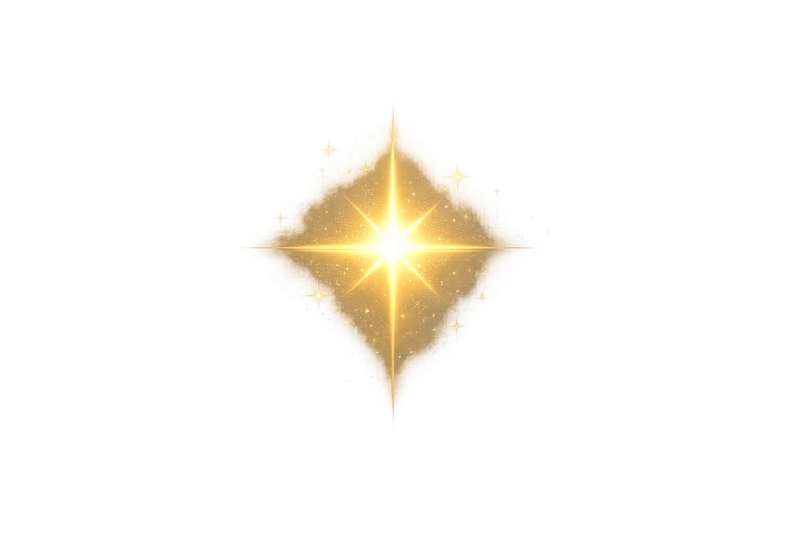

An archive for all things Dark academia: Curated stories, films, ideas etc recommendation
A group of elite students and a mysterious professor become entangled in murder and obsession.
Genre: Murder Mystery, Drama
Shakespearean drama students get caught in a real-life tragedy.
Genre: Mystery, Drama
A man remains young while his portrait ages, reflecting his sins.
Genre: Gothic Fiction, Philosophy, Classic
I mean love the author or hate her, who does not know about this?
Genre: Fantasy, Adventure, Coming-of-Age, 𝙰̶𝚛̶𝚎̶ ̶𝚝̶𝚑̶𝚎̶ ̶𝚝̶𝚊̶𝚐̶𝚜̶ ̶𝚛̶𝚎̶𝚊̶𝚕̶𝚕̶𝚢̶ ̶𝚗̶𝚎̶𝚌̶𝚎̶𝚜̶𝚜̶𝚊̶𝚛̶𝚢̶?̶
A girl unexpectedly inherits a billionaire’s fortune, but must solve a series of riddles and survive a house full of suspicious heirs.
Genre: Mystery, Thriller, Young Adult
Six gifted magicians are selected for a secret society, where power, knowledge, and betrayal determine who survives.
Genre: Fantasy, Psychological
A collection of haunting tales exploring madness, death, and the darker sides of human nature.
Genre: Gothic Horror, Psychological, Classic
A student investigates a closed murder case for a school project, uncovering secrets that were meant to stay buried.
Genre: Mystery, Crime, Young Adult
An English teacher inspires his students to think independently, embrace poetry, and seize the day.
Genre: Drama, Coming-of-Age
A group of astronauts travel through a wormhole in search of a new home for humanity as Earth faces extinction.
Genre: Sci-Fi, Drama, Adventure
The origins of the Beat Generation unfold as young writers get entangled in friendship, rebellion, and a shocking crime.
Genre: Drama, Biography
A ballerina’s pursuit of perfection blurs the line between reality and illusion, leading to obsession and psychological breakdown.
Genre: Psychological Thriller, Drama
An exclusive group of Oxford students indulge in privilege, excess, and moral decay during a night that spirals out of control.
Genre: Drama, Psychological, Dark Academia
A progressive professor challenges traditional expectations at an elite women’s college in the 1950s.
Genre: Drama, Historical
A quiet girl’s life changes after her mysterious uncle arrives, bringing unsettling secrets with him.
Genre: Psychological Thriller, Gothic, Drama
At a secluded boarding school, a charismatic teacher’s obsession with a student leads to disturbing consequences.
Genre: Drama, Psychological thriller
A boy survives a tragedy and becomes entangled in art, grief, and crime while holding onto a stolen painting.
Genre: Drama, Art, Coming-of-Age
The story of the young writer who created Frankenstein, exploring love, loss, and literary ambition.
Genre: Biography, Drama, Gothic
Four sisters navigate art, ambition, and identity while growing up in a world that limits their choices.
Genre: Drama, Literary, Period
A monk investigates a series of mysterious deaths in a medieval monastery filled with forbidden knowledge.
Genre: Mystery, Historical
A rare book dealer is drawn into a dangerous quest involving occult texts and secret societies.
Genre: Mystery, Occult, Thriller
The poetic love story of John Keats and Fanny Brawne, centered around art, longing, and literature.
Genre: Romance, Biography, Literary
Blazers, turtlenecks, vintage coats
A customizable workspace for journaling, note-taking, and organizing thoughts in an aesthetic and structured way.
A platform to track your reading, discover books, and explore reviews from a global community of readers.
This one needs no introduction amiright? (ofcourse I am, I am a freaking genius!
A microblogging platform known for its poetic posts, niche aesthetics, and dark academia communities.
A cozy simulation game where you build a magical village filled with soft, calming visuals and fantasy elements.
A psychological idle game that explores identity and self-reflection through philosophical storytelling.
A mystery puzzle game where you investigate a quiet town and uncover hidden secrets through observation.
An interactive storytelling game inspired by the classic gothic tale of obsession and art.
A relaxing simulation game where you run a cozy café, focusing on atmosphere and slow, comforting gameplay.
A photo editing app that gives your pictures a vintage, film-like aesthetic perfect for dark academia visuals.
A writing-focused app designed to make typing feel immersive and creative, like composing stories on an old machine.
A focus app that helps you stay productive by growing virtual trees while you avoid distractions. Basically when you have ADHD or attention span of a goldfish
For learning new languages. Install this or the litle birdie might 𝚔̶𝚒̶𝚕̶𝚕̶ kidnap me! Bonjour I mean adios!
A design tool for creating aesthetic posters, notes, and visual content with ease.
Gifted individuals named after famous authors use supernatural abilities while navigating crime, morality, and literature-inspired conflicts.
Genre: Supernatural, Mystery, Literary
A former soldier learns to understand emotions and human connection through writing letters for others.
Genre: Drama, Emotional, Literary
A seemingly powerless student is sent to eliminate others with abilities, leading to a tense psychological battle of deception.
Genre: Psychological, Thriller, Mystery
Students at an elite academy compete in a ruthless system where intelligence and manipulation determine status.
Genre: Psychological, School, Strategy
A student gains the power to kill using a supernatural notebook, sparking a high-stakes battle of intellect with a genius detective.
Genre: Psychological, Thriller, Supernatural
Gifted children uncover a truth about their orphanage and must outsmart their outsmarters to survive.
Genre: Thriller, Mystery, Psychological
A young noble forms a contract with a demon butler as they navigate dark mysteries in Victorian England.
Genre: Gothic, Supernatural, Mystery
A brilliant girl with a love for mysteries solves complex cases in a European academy setting.
Genre: Mystery, Historical, Academia
A mastermind seeks to reform society through calculated crimes, challenging the morality of justice itself.
Genre: Psychological, Crime, Intellectual
An innocent magical girl story fighting witches. This is all pastel academia. Trust. 𝙽̶𝚘̶ ̶𝚙̶𝚊̶𝚛̶𝚊̶𝚍̶𝚘̶𝚡̶
Genre: Psychological, Dark Fantasy, Tragedy
A group of students accidentally discover time travel, leading to complex consequences and ethical dilemmas.
Genre: Sci-Fi, Psychological, Drama
A cursed classroom becomes the center of a deadly mystery where students must uncover the truth to survive.
Genre: Horror, Mystery, School
A doctor pursues a former patient who grows into a terrifying criminal mastermind, exploring morality and human nature.
Genre: Psychological, Thriller, Crime
Wednesday Addams navigates life at Nevermore Academy while uncovering a murder mystery tied to her past.
Genre: Dark Academia, Mystery, Supernatural
A historian and a vampire form an unlikely alliance while uncovering ancient secrets hidden within a magical manuscript.
Genre: Fantasy, Romance, Supernatural
A young witch struggles to balance her mortal life with dark magical forces and forbidden knowledge.
Genre: Supernatural, Horror, Dark Fantasy
A group of strangers are trapped in a mysterious town where escape seems impossible and night brings terrifying creatures.
Genre: Mystery, Horror
A small German town uncovers a complex web of time travel, secrets, and interconnected families across generations.
Genre: Sci-Fi, Mystery, Psychological
At a prestigious Spanish school, class divides, ambition, and secrets lead to crime and betrayal.
Genre: Drama, Thriller, Teen
Students at a strict boarding school uncover dark secrets hidden within its isolated and eerie environment.
Genre: Mystery, Horror, Dark Academia
A chess prodigy rises to fame while battling addiction, loneliness, and the pressures of genius.
Genre: Drama, Psychological, chess
A young soldier discovers a rare power that could change the fate of her war-torn world.
Genre: Fantasy, Adventure
Classic literary characters come together in a dark, gothic world filled with horror and philosophical themes.
Genre: Gothic, Horror, Supernatural
Students at a secret magical university discover that magic is far more dangerous than they imagined.
Genre: Fantasy, Dark Academia, Drama
A young girl journeys through parallel worlds uncovering secrets about science, religion, and power.
Genre: Fantasy, Adventure, Philosophical
A law professor and her students become entangled in a series of complex murder cases.
Genre: Crime, Thriller, Academic
A girl trapped inside a romance novel needs to find a "happy ending".
Genre: Psychological, Horror, Thriller
A tense psychological story exploring identity, inheritance, and the disturbing bond between mother and daughter.
Genre: Psychological, Drama, Thriller
A detective teams up with an assassin who can detect lies, uncovering corruption and secrets within the city.
Genre: Mystery, Crime, Thriller
A seemingly perfect world hides unsettling truths, as characters begin to question reality and morality.
Genre: Psychological, Drama, Mystery
A student infiltrates an elite school tied to powerful families, uncovering secrets beneath wealth and prestige.
Genre: Drama, School, Mystery
A story centered around pride, identity, and the lengths people go to prove their worth in a rigid society.
Genre: Drama, Psychological
A dark tale of a family bound by blood and secrets, blending domestic life with supernatural tension.
Genre: Supernatural, Drama, Dark Fantasy
A brutal school ranking system turns students against each other in a psychological battle for survival.
Genre: Psychological, Thriller, School
A girl gains the ability to see glimpses of the future, but every choice she makes leads to unintended consequences.
Genre: Thriller, Supernatural, Mystery
A woman becomes trapped in a dangerous situation, navigating manipulation, survival, and psychological warfare.
Genre: Psychological, Thriller
A boy hides a terrifying secret about his father while trying to protect others and escape his fate.
Genre: Psychological, Thriller, Crime
Two women entangled in power, politics, and intellect navigate a dangerous aristocratic society through strategy and manipulation.
spoiler alert! ̶𝚂̶𝚘̶ ̶𝚠̶𝚑̶𝚊̶𝚝̶ ̶𝚒̶𝚏̶ ̶𝚝̶𝚑̶𝚎̶ ̶𝚙̶𝚊̶𝚜̶𝚝̶𝚎̶𝚕̶ ̶𝚙̶𝚛̶𝚒̶𝚗̶𝚌̶𝚎̶𝚜̶𝚜̶ ̶𝚑̶𝚎̶𝚛̶𝚘̶𝚒̶𝚗̶𝚎̶ ̶𝚊̶𝚗̶𝚍̶ ̶𝚎̶𝚟̶𝚒̶𝚕̶ ̶𝚜̶𝚕̶𝚞̶𝚝̶ ̶𝚟̶𝚒̶𝚕̶𝚕̶𝚊̶𝚒̶𝚗̶𝚎̶𝚜̶𝚜̶ ̶𝚘̶𝚏̶ ̶𝚝̶𝚑̶𝚎̶ ̶𝚏̶𝚊̶𝚒̶𝚛̶𝚢̶ ̶𝚝̶𝚊̶𝚕̶𝚎̶ ̶𝚝̶𝚎̶𝚊̶𝚖̶𝚎̶𝚍̶ ̶𝚞̶𝚙̶ ̶𝚊̶𝚐̶𝚊̶𝚒̶𝚗̶𝚜̶𝚝̶ ̶𝚝̶𝚑̶𝚎̶ ̶𝚙̶𝚛̶𝚒̶𝚗̶𝚌̶𝚎̶?̶
Genre: Psychological, Political, Intellectual
A social media influencer becomes the target of a dangerous stalker, blurring the line between online fame and real danger.
Genre: Thriller, Horror, Psychological